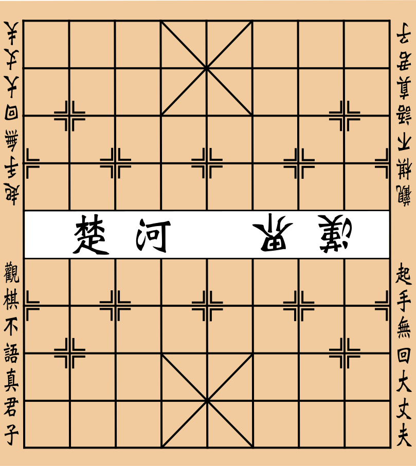

<!DOCTYPE html>
<html lang="en">

<head>
    <meta charset="UTF-8">
    <meta name="viewport" content="width=device-width, initial-scale=1.0">
    <title>Chinese Chess</title>
    <style>
        body {
            margin: 0 !important;
            padding: 0 !important;
        }


        #board{
            display:grid;
            grid-template-columns: repeat(9,1fr);
            grid-template-rows: repeat(10,1fr);
            grid-auto-flow: row;
            row-gap: 1vw;
            column-gap: 1vw;
            background:url('./img/antontw_chinese_chess_plate.svg');  background-size:100% 100%;
        }


    </style>
</head>

<body>
    <div id="app" style="margin: 0; padding: 0%;">
        <!-- <p>It's still under development</p> -->
        <div id="board">
            <!-- This is the board -->
            <!--  -->

        </div>

    </div>
    <!-- Assume index.js is the compiled output of index.ts -->
    <!-- <script src="../build/index.js"></script> -->
    <!-- <script type="text/javascript" src="test.js"></script> -->
</body>
<!-- <script>var exports = {};</script>
<script>var exports = {"__esModule": true};</script> -->
<script src='https://cdn.bootcdn.net/ajax/libs/jquery/3.5.1/jquery.js'></script>

<!-- <script src="../build/frontend/chesspieces.js"></script> -->
<script src="./chesspieces.js"></script>
<!-- <script src="../build/frontend/board.js"></script> -->

<script>
    $("");
    // $('#app').css('background-image','url(./img/antontw_chinese_chess_plate.svg)')
</script>


<!-- get position clicked -->
<script>

    function getPosInViewPort() {
        console.log("inside myfunc()")
        if (window.innerWidth !== undefined && window.innerHeight !== undefined) {
            var clientWidth = window.innerWidth;
            var clientHeight = window.innerHeight;
        } else {
            var clientWidth = document.documentElement.clientWidth;
            var clientHeight = document.documentElement.clientHeight;
        }

        console.log('clientWidth')
        console.log(clientWidth)
        console.log('clientHeight')
        console.log(clientHeight)

        console.log("x_coor in vw")
        console.log(event.clientX / clientWidth)
        console.log("y_coor in vh")
        console.log(event.clientY / clientHeight)


    }


    function printMousePos(event) {

        console.log("event.clientX")
        console.log(event.clientX)
        console.log("event.clientY")
        console.log(event.clientY)

        getPosInViewPort()
    }

    document.addEventListener("click", printMousePos);

</script>


</html>